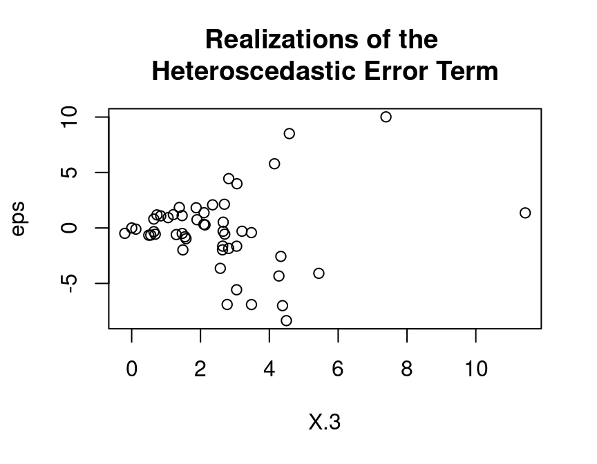
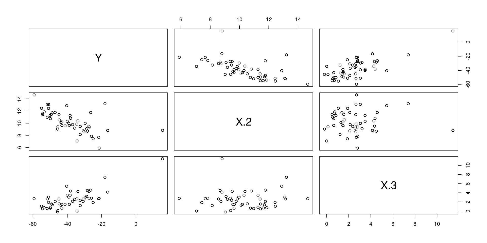

1.5 Programming in R
Let’s write, i.e., program our own R-function for estimating linear regression models. In order to be able to validate our function, we start with simulating data for which we then know all true parameters. Simulating data is like being the “Data-God”: For instance, we generate realizations of the error term \(\varepsilon_i\), i.e., something which we never observe in real data.
Let us consider the following multiple regression model:
\[y_i=\beta_1 +\beta_2 x_{2i}+\beta_3 x_{3i}+\varepsilon_{i},\quad i=1,\dots,n,\] where \(\varepsilon_{i}\) is a heteroscedastic error term \[\varepsilon_{i}\sim N(0,\sigma_i^2),\quad \sigma_i=x_{3i},\]
and where for all \(i=1,\dots,n=50\):
- \(x_{2i}\sim N(10,1.5^2)\)
- \(x_{3i}\) comes from a t-distribution with 5 degrees of freedom and non-centrality parameter 2
set.seed(109) # Sets the "seed" of the random number generators:
n <- 50 # Number of observations
## Generate two explanatory variables plus an intercept-variable:
X.1 <- rep(1, n) # Intercept
X.2 <- rnorm(n, mean=10, sd=1.5) # Draw realizations form a normal distr.
X.3 <- rt(n, df=5, ncp=2) # Draw realizations form a t-distr.
X <- cbind(X.1, X.2, X.3) # Save as a Nx3-dimensional data matrix.OK, we have regressors, i.e., data that we also have in real data sets.
Now we define the elements of the \(\beta\)-vector. Be aware of the difference: In real data sets we do not know the true \(\beta\)-vector, but try to estimate it. However, when simulating data, we determine (as “Data-Gods”) the true \(\beta\)-vector and can compare our estimate \(\hat{\beta}\) with the true \(\beta\):
## Define the slope-coefficients
beta.vec <- c(1,-5,5)
We still need to simulate realizations of the dependent variable \(y_i\). Remember that \(y_i=\beta_1 x_{1i}+\beta_1 x_{2i}+\beta_3 x_{3i}+\varepsilon_{i}\). That is, we only need realizations from the error terms \(\varepsilon_i\) in order to compute the realizations from \(y_i\). This is how you can simulate realizations from the heteroscedastic error terms \(\varepsilon_i\):
## Generate realizations from the heteroscadastic error term
eps <- (X.3)*rnorm(n, mean=0, sd=1)Take a look at the heteroscedasticity in the error term:
plot(y=eps, x=X.3,
main="Realizations of the \nHeteroscedastic Error Term")
With the (pseudo-random) realizations from \(\varepsilon_i\), we can finally generate realizations from the dependent variable \(y_i\):
## Dependent variable:
y <- X %*% beta.vec + epsLet’s take a look at the data:
mydata <- data.frame("Y"=y, "X.1"=X.1, "X.2"=X.2, "X.3"=X.3)
pairs(mydata[,-2]) # The '-2' removes the intercept variable "X.1"
Once we have data, we can compute the OLS estimate of the true \(\beta\) vector. Remember the formula:
\[\hat{\beta}=(X^\top X)^{-1}X^\top y\]
In R-Code this is: \((X^\top X)^{-1}=\)solve(t(X) %*% X), i.e.:
## Computation of the beta-Vector:
beta.hat <- solve(t(X) %*% X) %*% t(X) %*% y
beta.hat
#> [,1]
#> X.1 -2.735042
#> X.2 -4.685719
#> X.3 5.091811
Well done. Using the above lines of code we can easily program our own myOLSFun() function!
myOLSFun <- function(y, x, add.intercept=FALSE){
## Number of Observations:
n <- length(y)
## Add an intercept to x:
if(add.intercept){
Intercept <- rep(1, n)
x <- cbind(Intercept, x)
}
## Estimation of the slope-parameters:
beta.hat.vec <- solve(t(x) %*% x) %*% t(x) %*% y
## Return the result:
return(beta.hat.vec)
}
## Run the function:
myOLSFun(y=y, x=X)
#> [,1]
#> X.1 -2.735042
#> X.2 -4.685719
#> X.3 5.091811
Can you extend the function for the computation of the covariance matrix of the slope-estimates, several measures of fits (R\(^2\), adj.-R\(^2\), etc.), t-tests, …?